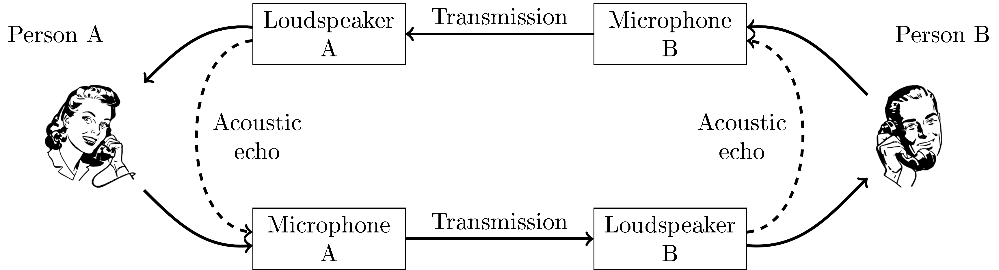

Echo cancellation
Contents
11.2. Echo cancellation¶
A frequently occurring distortion in speech telecommunication scenarios is echoes, which have either an electric or acoustic cause. Electric echoes appear in analogue networks at points of impedance mismatch. Since a majority of telecommunication networks today are digital, such electric echoes are mostly of historical interest and not discussed here further. Acoustic echoes however is a problem which has become more important, especially with the increasing use of teleconferencing services. Such acoustic echoes appear when the speech of a person A is played through the loudspeakers for a person B, such that the loudspeaker sound is picked up by the microphone of person B and transmitted back to person A. If the delay would be mere milliseconds, then person A would perceive the feedback signal as reverberation, which is not too disturbing (in some circumstances such an effect, known as side-talk, could actually be a useful feature indicating that the microphone is recording). However, typically the transmission delay is above 100ms, such that the feedback is perceived as an echo, which is usually highly disconcerting and disturbing. Even worse, sometimes the acoustic echo signal completes the feedback loop and goes in a circle, again and again. If the feedback signal is attenuated on each loop, then the feedback slowly diminishes, but sometimes the feedback loop can amplify the signal such that the signal quickly escalates up to the physical limit of hardware or until the loudspeakers blow up. It is thus clear that echoes must be avoided in real-life systems.
Fortunately, echo cancellation is well-understood problem with “standard” solutions available. In short, these methods are based on estimating the acoustic room-impulse-response (RIR), filtering the loudspeaker signal with the RIR to obtain an estimate of the acoustic echo, and subtracting the estimated echo from the microphone signal. Though it is a classic problem with off-the-shelf solutions available, it remains a difficult problem. Central difficulties include:
The RIR is not stationary and must therefore be estimated on-line as an adaptive filter. The RIR changes whenever a door or window is opened or closed, furniture are moved or people move within the room, and even when the temperature of the room changes. Changes are even more rapid when using mobile, handheld or wearable devices, when the location of the device can change rapidly. In the worst case, the microphone and loudspeaker can be on different devices such that their acoustic distance can change rapidly.
When the RIR has a long tail, that is, when the room has a long reverberation, then the corresponding filters must be long, which increases computational complexity. Fast adaptation to changing RIRs also increases computational requirements.
Observe that echo cancellation methods refer to subtracting the estimated echo from the microphone signal. In contrast, noise attenuation methods multiply the microphone signal with a positive scalar, such that the output signal approximates the echo-free signal. The essential difference is that multiplicative methods generally estimate only the energy/magnitude of the signal, while subtractive methods try to match both magnitude and phase. The benefit of subtractive methods is that the output quality is generally better since the removal-method matches the physical process which creates the signal. Multiplicative methods however are much more robust than subtractive methods; in particular, if the phase is incorrectly estimated, then a subtractive method can increase the amount of noise in a signal. In the worst case, an echo canceller poorly matched to the room response can generate a catastrophic feedback loop, whereas multiplicative methods can be designed to never increase the amount of noise.
Echo suppression methods use this insight to remove acoustic echo with a multiplicative method similar to that of spectral subtraction or Wiener filtering used in noise attenuation.
11.2.1. Echo cancellation solutions¶
As it is mentioned above, the problem that echo cancellation needs to solve is the effect of the room in the path from a loudspeaker to the microphone used in the communication. This means that the signal played by the loudspeaker enters the system with a certain delay and multiple echo paths (Room impulse response). From now on, we will refer to the received signal played by the loudspeaker as far-end (x(n)), and the useful speech signal from the user will be called near-end signal (s(n)). The mixture recorded by the microphone that would be sent to the other end of the call can be represented as:
where v(n) represents additive noise in the scene and, for simplicity, will be considered part of s(n). The effect of the room on the far-end signal can be modelled as an FIR filter h(n), added to the far-end signal using a convolution. The idea of echo cancellation is to find an estimation of this FIR filter, and applying it to the received far-end signal, we can then subtract it from d(n) to extract the useful near-end signal.
The estimation of the echo path model is done by minimizing the mean square error (MMSE) between the recorded signal and the estimated filtered far-end, assuming that s(n) is not present. However, only one estimation is not possible due to multiple factors.
The echo path is unknown at the beginning of the communication, additionally, any changes in the echo path can be catastrophic in the estimation.
The non-stationariety of the speech signal makes the estimation of the echo path a complex task.
It is very likely that s(n) is present in the recorded signal, causing the estimation to be flawed (Double-talk).
These three issues require a continuous monitoring of the quality of the estimation and the filter must be periodically updated in order to accurately represent the echo path. For that reason the MMSE method must be calculated iteratively as we receive more information from the far-end and recorded signals. The most popular algorithm to calculate this adaptive filter is Least Mean Squares (LMS) and its multiple variants. The expression to minimise is:
The objective is to find the coefficients of the estimated filter that minimise the previous equation, and a simple depiction of the iterative LMS algorithm used to update the filter can be divided in three steps:
Estimate the recorded echo signal:
Estimate the error:
Update the filter weights:
The term μ represents the learning rate of the algorithm. Higher values will make the algorithm converge faster, but might converge to a bigger error value, while smaller learning rate will converge slower and it might not be able to follow the changes in the echo path. It has been proven that an adaptive learning rate provides the best results and most modifications on this method, focus on handling an adaptive learning rate according to the required specifications. As we can see in the second equation, the estimation error of the adaptation algorithm is also the signal that will be used as output and that will contain the corresponding s(n) in an optimal case.
This first approach of the LMS adaptive filter is proposed to be applied on the time domain of the audio signal. If the filter updates on every sample of the received audio signal, accurately modelling a room impulse response will require a filter of a few thousand samples. Updating the filter on every new sample becomes computationally expensive, and for these reasons other methods are proposed based on this approach:
BlockLMS: Reduce the rate of updates in the algorithm, such that the update is only applied once every certain number of samples can help considerably reduce the complexity of the algorithm. However, the block processing can affect the convergence of the algorithm and reduce its responsiveness.
Frequency Domain Adaptive Filters (FDAF): The simplest case of FDAF consists in converting the audio signal to the frequency domain using an STFT, and then apply an independent LMS filter on each of the frequency components of the signal. This alllows to represent the echo path with a much smaller amount of samples. Considering the algorithm with quadratic complexity, it is preferable to have many short filters than having just a long one.
Finally, as we mention above, the main problem that adaptive filters face in real-life communication applicatoins is double talk. In a common interaction between two people, it is very likely that both speakers are active at the same time. In the echo cancellation framework, that means that both far-end signal x(n) and near-end s(n) will be present in the mixture. As the adaptive filter tries to minimize the error between the far-end signal and the recorded one, in the presence of double-talk the filter will likely diverge and remove or distort the near-end signal instead of reducing the echo feedback.
To reduce the effect of double-talk in the adaptation process, it is important to detect when double-talk starts and stop the adaptation. Assuming that the filter had converged before the double-talk segment, the the far-end signal should still be removed, while the near-end speaker would pass through. Many methods have been presented to control the learning rate of the adaptative filter depending on the detected double-talk, but most of them are based on three main ideas:
Energy based detection (Geigel detector):
This detector assumes that, if the energy ratio between the far-end signal and the recorded one will remain almnost constant until an additional voice is added from the near-end signal. When the ratio between far-end and recorded signals changes, we can assume that there is double-talk.
It is a very simple method that barely adds any computational complexity to the system.
The detector assumes that the echo level is clearly different than the near-end speech. Therefore, this method is highley influenced by noise and signal misalignment.
The method also requires to be tuned for each specific configuration and changes in the echo path during communication might trigger the double-talk detection.
Normalized Cross-Correlation (NCC):
This method measures the similarity between the input and processed signals.
It is more robust to noise than the energy levels.
The value of NCC will be close to 1 when double-talk is present, and 0 when it is not. Therefore, the NCC can be used as a scaling factor for the learning rate.
Two-path Echo Cancellation:
Two filters, background and foreground, process the echo signal simultaneously. The background filter is continuously adapting on every step, while the foreground one remains fixed. A control module then decides if there is double-talk and the better solution is to update the coefficients or keep them unmodified based on the output of the backround and foreground filters.
It is the most robust of the presented methods.
Requires additional computational complexity, as the far-end signal needs to be filtered twice before deciding if ther is double-talk.
The acoustic feedback loop in telecommunication applications.

Model of the echo path and estimated filter

Feedback loop for echo cancellation

Two-path echo cancellation model